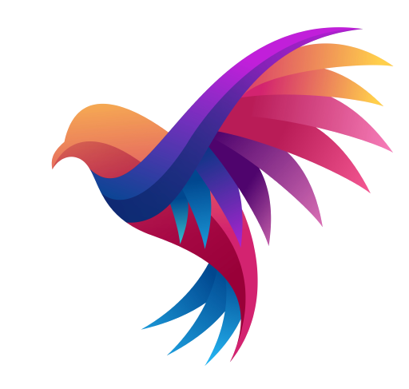

<mat-toolbar>
    
    <span class="nav-title">Giphy</span>
    <button class="nav-button" mat-raised-button color="accent" routerLink="/trending">Trending</button>
    <button class="nav-button" mat-raised-button color="primary" routerLink="/search">Search</button>
    <button class="nav-button" mat-raised-button color="warn" routerLink="/favorite">Favorite</button>    
    
</mat-toolbar>
<div class="app">
    <div class="content">
        <router-outlet></router-outlet>
    </div>
</div>